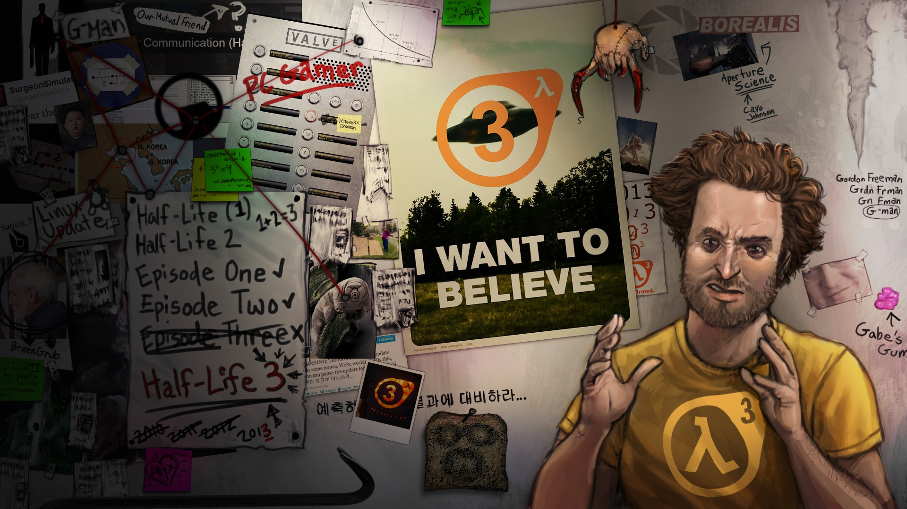
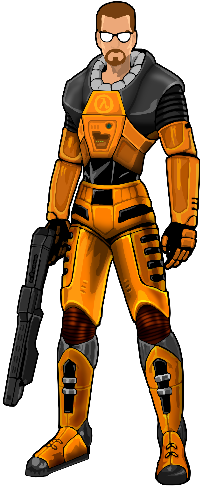
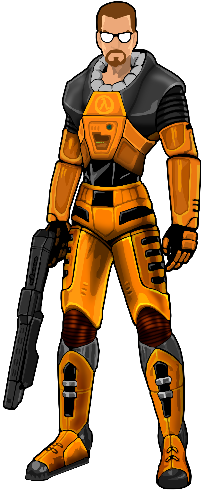

Publicado em 1998, Half Life é uma das franquias de maior sucesso no mercado de jogos de tiro em primeira pessoa (FPS). O jogo, juntamente com DOOM (1993) é considerado por muitos um dos "pais" do gênero, que até hoje permanece como uma forte presença no mercado de games.
Em 1997, antes do lançamento, os níveis e inteligência artificial do jogo foram completamente reformulados, e a data de lançamento, adiada diversas vezes. Sendo finalmente lançado em 8 de novembro de 1998, com um sucesso arrebatador, ganhando na E3 do mesmo ano o Game Critics Awards para "Melhor jogo de computador" e "Melhor jogo de ação". Era apenas o começo de dezenas de nominações e outros prêmios.
Com toda forte inspiração vinda do clássico DOOM (e um pouquinho de Quake, que é DOOM só que com modo multiplayer e realmente 3D), Half Life possui uma gameplay diferente do ponto de vista dos desafios propostos ao jogador, havendo uma divisão bem equalitária entre quebra-cabeças e tiroteio frenético.
O personagem principal é Gordon Freeman, um físico teórico e cientista em Black Mesa, um centro de pesquisas militares e do governo americano. Nas sequels Opposing Force, Blue Shift e Decay, respectivamente, joga-se com Adrian Shephard, um cabo do exército (e posteriormente, inimigo de Freeman); Barney Calhoun, um dos seguranças de Black Mesa e conhecido de Gordon; e as Doutoras Gina Cross e Colette Green, colegas de Gordon.
Curiosidade: O jogo e suas sequels todos são nomeados de acordo com termos científicos da física, sendo a maioria deles relacionado à radioatividade.
Desde 2007, quando o último título oficial da série foi lançado, fãs vem elaborando diversas teorias mirabolantes para tentar especular quando o terceiro jogo será lançado, mas até hoje, os desenvolvedores não deram muita confirmação a respeito de uma data.
 
